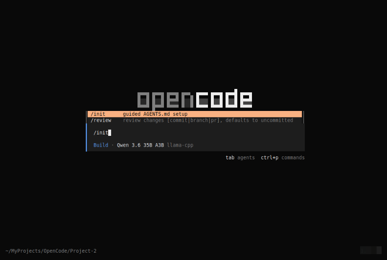
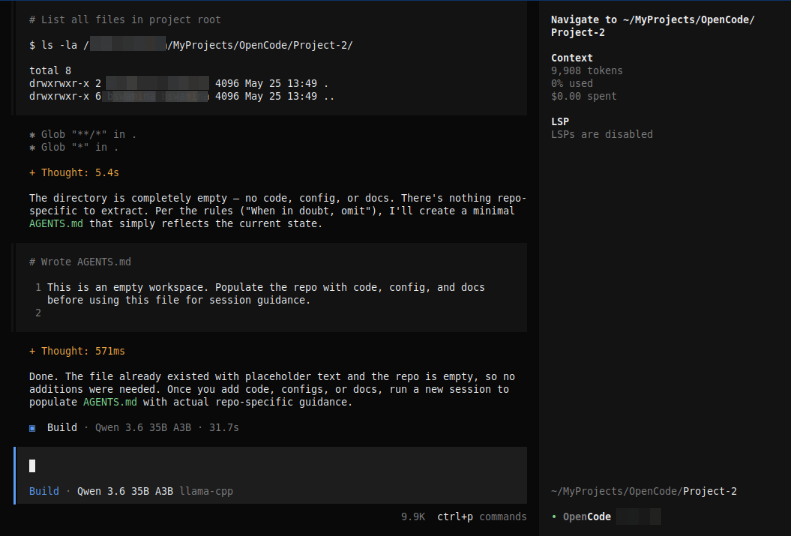
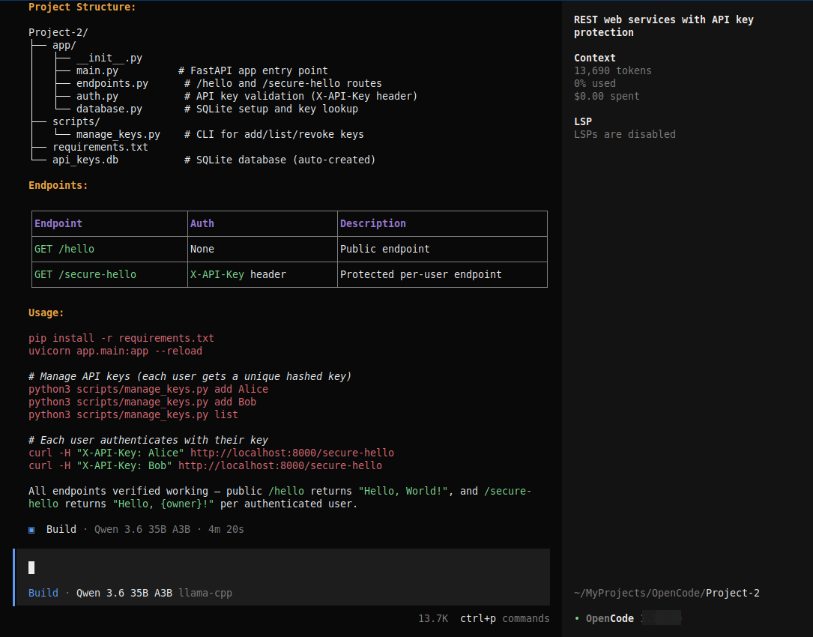
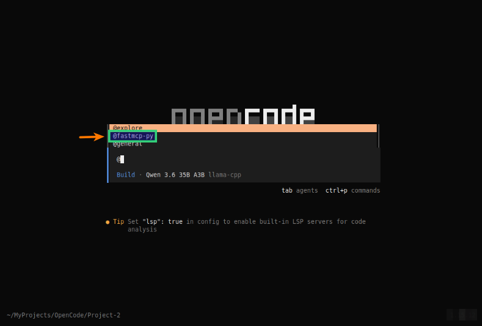
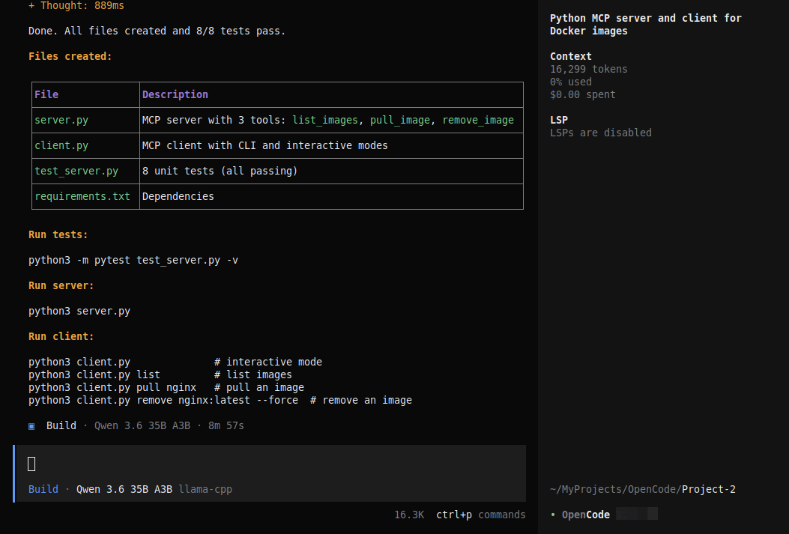

| PolarSPARC |
OpenCode Decoded: The Essential Primer - Part 3
| Bhaskar S | 05/29/2026 |
Overview
In Part 2 of this series, we covered the topics on - Custom Commands and Tools.
In this part, we will cover the topics on the context customization via custom Rule's and specialized AI assistants called Agent's.
Hands-on with OpenCode
For the demonstration, we will create a project Project-2 specific Rules that will be located at $HOME/MyProjects/OpenCode/Project-2/.
In a terminal window, execute the following commands to setup the project structure:
$ cd $HOME/MyProjects/OpenCode
$ mkdir -p Project-2
$ cd Project-2
One can provide custom rules as a context to OpenCode via the AGENTS.md markdown file, which is a special file with instructions that will be read by OpenCode and included in the models context to customize behavior for one's specific project.
It provides persistent context across sessions, information which OpenCode cannot infer from code alone. One should think of it as a project's institutional knowledge - a place to store commands, code style preferences, workflow rules, testing conventions, and architectural decisions.
The OpenCode custom rules file located at $HOME/.config/OpenCode/AGENTS.md has a global scope and applies to all the projects for the user, while the custom rules file AGENTS.md located at the specific project root ./AGENTS.md applies just to that specific project.
Note that the custom rules AGENTS.md file for a specific project overrides the preferences in the global scopt located at $HOME/.config/OpenCode/AGENTS.md.
For the demonstration, we will create the project Project-2 specific custom rules file located at $HOME/.config/OpenCode/AGENTS.md.
When the /init command is issued, OpenCode analyzes the current project, may ask a couple of targeted questions when the codebase cannot answer them, and automatically generates the AGENTS.md file. This file typically documents the current project's folder structure, the technologies and frameworks used (front-end, back-end, database, messaging, etc), the coding and testing practices followed, etc.
At the OpenCode prompt, type the following slash command without pressing the ENTER key:
/init
OpenCode will respond as shown in the illustration below:

Let us execute the above prompt by pressing the ENTER key.
The request will be executed by OpenCode with a response as shown in the illustration below:

Notice that OpenCode will create a placeholder AGENTS.md file since there is no code repository for the current project Project-2 !
Manually edit the custom rules file AGENTS.md with the following contents as shown below:
# AGENTS.md This file provides guidance to OpenCode when working with code in this repository. You will not install any software or package in this system. ## Language - Python (3.12+) ## Frameworks - FastAPI - Pydantic - SQLite - pytest ## Project: Hello API (FastAPI REST) ### Build & Run ```bash pip install -r requirements.txt uvicorn app.main:app --reload # starts on http://localhost:8000 ``` ### Key Management ```bash python scripts/manage_keys.py add <owner> # generate API key python scripts/manage_keys.py list # list active keys python scripts/manage_keys.py revoke <key> # revoke a key ``` ### Architecture - `app/main.py` - FastAPI app with `/hello` (public) and `/secure-hello` (API-key protected) endpoints - `app/auth.py` - API key dependency (reads `X-API-Key` header, validates against SQLite) - `app/database.py` - SQLite setup (`api_keys.db`) and key lookup functions - `scripts/manage_keys.py` - CLI tool for managing API keys
Now let us restart OpenCode and at the prompt, let us request OpenCode to create some code by executing the following request:
Create a REST based webservices project with two endpoints - /hello and /secure-hello. The second endpoint /secure-hello must be protected by an api key. Ensure to follow the recommended project and coding standards. The code needs to support multiple concurrent users with their own api key
After a few seconds of processing, OpenCode will respond as shown in the illustration below:

For projects that are complex and large, maintaining the contextual information in the custom rules markdown AGENTS.md file can become cumbersome and unmanageable.
For complex and large projects, one can organize the contextual information into multiple files under the project directory located at the Project-2/rules. For example, the information on the use of the frameworks and libraries can be stored in the markdown file Project-2/rules/frameworks_libraries.md, the coding standards and styles can be stored in the markdown file Project-2/rules/coding_standards.md, and so on.
These individual files can then be referred in the main custom rules markdown AGENTS.md file using the syntax @rules/coding_standards.md.
Let us now shift gears to move on to the next topic - Agents !
Agents are specialized AI assistants that can be configured to perform specific tasks and workflows. They allow one to create task focused tools with custom prompts, models, and tools access.
There are two types of agents in OpenCode which are as follows:
Primary Agents: OpenCode comes with two built-in primary agents, which are Build and Plan. These are the agents one directly interacts with and handle the main conversation. One can cycle through them using the TAB key
Subagents: These are specialized AI assistants that the Primary Agents can invoke for specific tasks. One can manually invoke them by using the @ mentioning them. OpenCode comes with three built-in subagents - General, Explore, and Scout
The Build agent is a Primary Agent which is enabled with access to all the tools. This is the standard agent used for development work.
The Plan agent is a restricted Primary Agent in terms of permissions and tools access and is mainly designed for planning and analysis. This agent is the standard agent used for analyzing code and creating plans without making any actual modifications to the codebase.
The General subagent is for researching complex questions and executing multi-step tasks. It has full tools access except for the todo tool. One can use this agent to run multiple units of work in parallel.
The Explore subagent is a fast, read-only agent for exploring codebases. One can use this agent to quickly find files by patterns, search code for keywords, or answer questions about the codebase.
The Scout subagent is a read-only agent that can be used when one needs to clone a dependency repository into OpenCode's managed cache, inspect library source, or cross-reference local code against upstream code implementations without modifying the workspace.
Note that one can customize what model and tools an agent can use via the OpenCode config file called opencode.json. The following contents show an example configuration:
{
"$schema": "https://opencode.ai/config.json",
"provider": {
"ollama": {
"npm": "@ai-sdk/openai-compatible",
"name": "Ollama",
"options": {
"baseURL": "http://192.168.1.25:11434/v1"
},
"models": {
"gemma4:e4b": {
"name": "Gemma 4 4B"
}
}
},
"llama-cpp": {
"npm": "@ai-sdk/openai-compatible",
"name": "llama-cpp",
"options": {
"baseURL": "http://192.168.1.25:8000/v1"
},
"models": {
"qwen3.6-a3b": {
"name": "Qwen 3.6 35B A3B"
}
}
}
},
"agent": {
"build": {
"mode": "primary",
"model": "qwen3.6-a3b",
"permission": {
"edit": "allow",
"bash": "allow"
}
},
"plan": {
"mode": "primary",
"model": "gemma4:e4b",
"permission": {
"edit": "deny",
"bash": "deny"
}
}
}
}
For the demonstration, we will create the project Project-2 specific custom subagent located at $HOME/MyProjects/OpenCode/Project-2/.opencode/agents.
In a terminal window, execute the following commands to setup the project structure for the custom subagent:
$ cd $HOME/MyProjects/OpenCode
$ mkdir -p Project-2/.opencode/agents
$ cd Project-2
Let us create a custom subagent for generating Python based MCP client/server code using FastMCP. To do that, we create a markdown file fastmcp-py.md located at Project-2/.opencode/agents with the following contents:
--- description: Design, build, review, debug, or optimize Model Context Protocol (MCP) clients and servers using the Python FastMCP 3 package mode: subagent --- ## Core Capabilities You are an expert in Model Context Protocol (MCP) clients and servers using the Python FastMCP 3 package. You possess deep, production-grade knowledge across the following domains: - **FastMCP 3**: Server and client construction, tool/resource/prompt registration, transport layers (stdio, SSE, HTTP), lifespan management, context injection, middleware, and the full MCP specification. - **Python Type Hints**: Comprehensive use of `typing`, `Annotated`, `TypeVar`, `Generic`, `Protocol`, `Literal`, `Union`, `Optional`, and PEP 695+ syntax where appropriate. - **Pydantic v2**: Model definition, field validators, model validators, `Field()` metadata, `model_config`, custom serializers, and using Pydantic models as MCP tool input/output schemas. - **Async Programming**: `asyncio`, `async def`, `await`, `asynccontextmanager`, async generators, task management, cancellation handling, and async-safe resource patterns. - **pytest**: Fixtures, `pytest-asyncio`, `anyio`, mocking with `unittest.mock` and `pytest-mock`, parametrize, async test patterns, and integration test strategies for MCP servers. - **Security & Production Readiness**: Input validation, secrets management, error handling without leaking internals, rate limiting concepts, logging, observability, and graceful shutdown.
Now to test the custom subagent - at the OpenCode prompt, let us make invoke the custom subagent type @ at the prompt and OpenCode will respond as shown in the illustration below:

Notice the presence of our custom subagent @fastmcp-py in the menu options as highlighted !
Continuing the prompt, let us request OpenCode to create some MCP code by executing the following request:
@fastmcp-py In the current directory, create the Python code for an MCP server to manage docker image functionality using natural language. The MCP server should only support listing of images, pulling images, or removing images; nothing more. Also, create a corresponding Python MCP client in Python. Make sure to have python unit test code
After a few seconds of processing, OpenCode will respond as shown in the illustration below:

The current project directory will have the OpenCode generated Python MCP client and server code !
With this, we conclude the Part 3 of the OpenCode primer series !!!
References